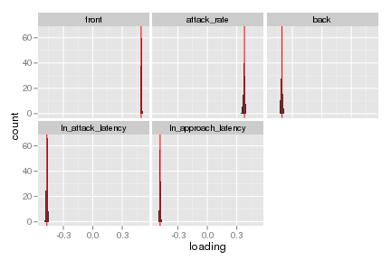

When using PCA for data reduction rather than inferential analysis, assumption of normality is not required (Tabachnick & Fidell 2001)
We will use principal component analysis to reduce the redundancy among the behavioural measurements scored from the open field (OF) and mirror image stimulation (MIS) trials and to identify the dominant axes of behavioural variation in the OF and MIS trials. Principal components are calculated separately for the OF and MIS behavioural measurements using a correlation matrix. The behavioural dataset used in this analysis is exactly the same as used in Taylor et al. (2012) so the principal component loadings and scores are also the same.
To evaluate the appropriateness of this analyses we will follow Budaev's advice (2010. Using Principal Components and Factor Analysis in Animal Behaviour Research: Caveats and Guidelines. Ethology 116: 472–480.). Budaev suggests some best practices for reporting PCA results that we will follow.
library(MASS) # MASS clashes with dplyr... so always load first
library(pander) # pander clashes with dplyr... so always load first##
## Attaching package: 'pander'
##
## The following object is masked from 'package:knitr':
##
## pandoclibrary(foreach)## foreach: simple, scalable parallel programming from Revolution Analytics
## Use Revolution R for scalability, fault tolerance and more.
## http://www.revolutionanalytics.comlibrary(doMC)## Loading required package: iterators
## Loading required package: parallelregisterDoMC()
library(tidyr)
library(dplyr)##
## Attaching package: 'dplyr'
##
## The following object is masked from 'package:MASS':
##
## select
##
## The following objects are masked from 'package:stats':
##
## filter, lag
##
## The following objects are masked from 'package:base':
##
## intersect, setdiff, setequal, unionset.alignment('right', row.names = 'left')
library(mvnormtest)
library(psych)
library(ggplot2)##
## Attaching package: 'ggplot2'
##
## The following object is masked from 'package:psych':
##
## %+%library(MCMCglmm)## Loading required package: Matrix
## Loading required package: coda
## Loading required package: lattice
## Loading required package: apebehav_data <- tbl_df(read.table(file = "data/behaviour.csv",
sep = ',',
header = TRUE,
stringsAsFactors = FALSE))
behav_data## Source: local data frame [4,286 x 25]
##
## ID Sex Grid Year julian trial_id Obs docil handlevent_year
## 1 4 F SU 2005 177 NA MRG 28 12
## 2 601 M AG 2005 165 NA CLS 15 9
## 3 601 M AG 2005 182 0.44270.2005.182 ADI 17 10
## 4 601 M AG 2005 224 0.44270.2005.224 ADI 8 12
## 5 5 F KL 2005 170 0.46255.2005.170 ADI 10 10
## 6 5 F KL 2005 184 NA MAW 20 11
## 7 5 F KL 2005 212 0.46255.2005.212 ADI 12 14
## 8 5 F KL 2005 219 NA ADI 10 15
## 9 603 M AG 2005 170 NA CLS 17 7
## 10 603 M AG 2005 173 0.46342.2005.173 ADI 12 8
## .. ... ... ... ... ... ... ... ... ...
## Variables not shown: Study (chr), front (dbl), attack_rate (dbl), back
## (dbl), ln_attack_latency (dbl), ln_approach_latency (dbl), hole_rate
## (dbl), jump_rate (dbl), chew (dbl), still (dbl), hang (dbl), groom
## (dbl), walk (dbl), fecal (dbl), trial_life (int), trial_year (int)Budaev suggests using the Bartlett's test and the Kaiser–Meyer–Olkin (KMO) measure to assess sampling adequecy. Because the behaviour data contains multiple measures per individual we will first subsample the data, randomly choosing 1 record per individual. Bootstrap 100 times.
mis_data <- behav_data %>%
select(ID, trial_id, front, attack_rate, back, ln_attack_latency,
ln_approach_latency)%>%
filter(!is.na(front))
# Get only complete records of the MIS behaviours
mis_sub_data <- foreach(i = 1:100, .combine = 'rbind') %dopar% {
mis_data %>%
group_by(ID) %>%
do(sample_n(., 1)) %>%
mutate(itt = i)
}
save(mis_data, mis_sub_data, file = "data/analyses_data/mis_sub.Rdata")load("data/analyses_data/mis_sub.Rdata")
n_trials <- mis_data %>% ungroup() %>% summarise(n = n())
mis_KMO_Bart <- mis_sub_data %>%
group_by(itt) %>%
select(-ID, -trial_id) %>%
summarise(
KMO_MSA = KMO(cbind(front, attack_rate, back,
ln_attack_latency, ln_approach_latency))$MSA,
cortest.bartlett = cortest.bartlett(R = cor(cbind(front,
attack_rate, back, ln_attack_latency,
ln_approach_latency)), n = n_trials$n)$chisq
)
p <- ggplot(mis_KMO_Bart, aes(x = KMO_MSA))
p <- p + geom_histogram(binwidth = 0.01)
p + ggtitle("Bootstrapped KMO MSA values") + xlim(c(0,1))## Warning: position_stack requires constant width: output may be incorrectp <- ggplot(mis_KMO_Bart, aes(x = cortest.bartlett))
p <- p + geom_histogram(binwidth = 10)
p <- p + ggtitle("Bootstrapped cortest.bartlett chi-sq values")
p + xlim(c(0,1000)) + xlab("chi-square (deg. free = 10)")The overall measure of sampling adequecy is fine (Measure of Sampling Adequacy = 0.7415). Bartletts test unsurprisingly rejects the hypotheses that all correlations are zero (P = 0).
load("data/analyses_data/mis_sub.Rdata")
mis_one <- mis_sub_data %>% filter(itt == 1)
mshapiro.test(t(as.matrix(mis_one[-c(1,2,8)])))##
## Shapiro-Wilk normality test
##
## data: Z
## W = 0.5897, p-value < 2.2e-16The data are not multi-normal. In our case this isn't a major problem because we are not performing any statistical tests alongside the PCA, we are just using the PCA to reduce the dimensionality of the data. We will note that the data are not multivariate normal.
Because our data contains multiple records per individual we will check to be sure pesudo-replication isn't having a large effect on the PCA loadings.
load("data/analyses_data/mis_sub.Rdata")
# Calculate PCA for subsampled data
mis_pca <- foreach(i = 1:100, .combine = rbind) %do% {
foo <- mis_sub_data %>% filter(itt == i)
pc_loadings <- prcomp(foo[-c(1,2,8)], scale = TRUE)$rotation[ ,"PC1"]
if(sign(pc_loadings["front"]) == -1) {pc_loadings <- pc_loadings * -1}
pc_loadings
}
mis_pca <- gather(data.frame(mis_pca), front, attack_rate, back, ln_attack_latency, ln_approach_latency, key = "trait", value = "loading")
# Calculate PCA for full dataset
mis_pca_full <- prcomp(mis_data[-c(1,2, 8)], scale = TRUE)
mis_pca_loadings <- data.frame(trait = dimnames(mis_pca_full$rotation)[[1]],
loading = mis_pca_full$rotation[ ,"PC1"])
if(sign(mis_pca_loadings$loading[mis_pca_loadings$trait == "front"]) == -1) {
mis_pca_loadings$loading <- mis_pca_loadings$loading * -1
}
p <- ggplot(mis_pca, aes(x = loading))
p <- p + geom_histogram(binwidth = 0.01) + facet_wrap( ~ trait)
p + geom_vline(data = mis_pca_loadings,
aes(xintercept = loading), color = 'red') The loadings for PC 1 are nearly identical (subsampled to 1 trial per indidivual vs. full dataset). So we will continue with the loadings from the full dataset so that they are consistent with Taylor et al. 2012.
# Reverse sign if 'front' is negative. This way higher scores will always be
# more aggressive. Sign of pc scores is arbitrary. Make sure to reverse scores
# and loadings or else confusion!
if(mis_pca_full$rotation["front", "PC1"] < 0){
mis_pca_full$rotation <- -1 * (mis_pca_full$rotation)
mis_scores <- data.frame(-mis_pca_full$x)
} else {
mis_scores <- data.frame(mis_pca_full$x)
}
# reattach scores to trail.id (which was rowname after PCA)
mis_pca_scores <- data.frame(trial_id = mis_data$trial_id,
misPC1 = mis_scores$PC1,
misPC2 = mis_scores$PC2,
stringsAsFactors = FALSE)
mis_pca_summary <- rbind(mis_pca_full$rotation,
StdDev = mis_pca_full$sdev,
PropVar = mis_pca_full$sdev^2 / sum(mis_pca_full$sdev^2))Following same procedure as above, now for the open field behavioural measures.
# Get only complete records of the MIS behaviours
of_data <- behav_data %>%
select(ID, trial_id, hole_rate,jump_rate, chew, still, hang,
groom, walk, fecal) %>%
filter(!is.na(hole_rate))
of_sub_data <- foreach(i = 1:100, .combine = 'rbind') %dopar% {
of_data %>%
group_by(ID) %>%
do(sample_n(., 1)) %>%
mutate(itt = i)
}
save(of_data, of_sub_data, file = "data/analyses_data/of_sub_data.RData")load("data/analyses_data/of_sub_data.RData")
n_trials <- of_data %>% summarise(n = n())
of_KMO_Bart <- of_sub_data %>%
group_by(itt) %>%
select(-ID, -trial_id) %>%
summarise(
KMO_MSA = KMO(cbind(hole_rate, jump_rate, chew, still, hang,
groom, walk, fecal))$MSA,
cortest.bartlett = cortest.bartlett(R = cor(cbind(hole_rate,
jump_rate, chew, still, hang, groom, walk, fecal)),
n = n_trials$n)$chisq
)
p <- ggplot(of_KMO_Bart, aes(x = KMO_MSA)) + geom_histogram(binwidth = 0.01)
p + ggtitle("Bootstrapped KMO MSA values") + xlim(c(0,1))## Warning: position_stack requires constant width: output may be incorrectp <- ggplot(of_KMO_Bart, aes(x = cortest.bartlett))
p <- p + geom_histogram(binwidth = 5)
p <- p + ggtitle("Bootstrapped cortest.bartlett chi-sq values")
p + xlim(c(0,1300)) + xlab("Chisq")The overall measure of sampling adequecy is a bit low, maybe..., (MSA = 0.6419). Again, Bartlett's test rejects the hypotheses that all correlations are zero (P = 0).
Lets take a closer look at the KMO test.
load("data/analyses_data/of_sub_data.RData")
kmo_of <- foreach(i = 1:100, .combine = 'rbind') %do% {
foo <- of_sub_data %>% ungroup() %>% filter(itt == i)
KMO(foo[ ,c(-1,-2,-11)])$MSAi
}
kmo_of <- tbl_df(data.frame(kmo_of))
p <- ggplot(gather(kmo_of, hole_rate, jump_rate, chew, still, hang, groom, walk, fecal, key = "behav", value = "KMO"), aes(x = KMO))
p <- p + facet_wrap( ~ behav) + geom_histogram(binwidth = 0.02) + xlim(c(0,1))
p + geom_vline(xintercept = 0.7, color = 'red')Looks like the low overall KMO index is driven by grooming and hanging. Both of which don't factor in very highly in the PCA loadings. I think therefore this is OK.
load("data/analyses_data/of_sub_data.RData")
of_one <- of_sub_data %>% filter(itt == 1)
mshapiro.test(t(as.matrix(of_one[-c(1,2,11)])))##
## Shapiro-Wilk normality test
##
## data: Z
## W = 0.7185, p-value < 2.2e-16The open field data are also not multi-normal (P = 2.4153 × 10-24).
Because our data contains multiple records per individual we will check to be sure pesudo-replication isn't having a large effect on the PCA loadings.
load("data/analyses_data/of_sub_data.RData")
# Calculate PCA for subsampled data
of_pca <- foreach(i = 1:100, .combine = rbind) %do% {
foo <- of_sub_data %>% filter(itt == i)
pc_loadings <- prcomp(foo[-c(1,2,11)], scale = TRUE)$rotation[ ,"PC1"]
if(sign(pc_loadings["still"]) == 1) {pc_loadings <- pc_loadings * -1}
}
of_pca <- gather(data.frame(of_pca), hole_rate, jump_rate, chew, still, hang, groom, walk, fecal, key = "trait", value = "loading")
# Calculate PCA for full dataset
of_pca_full <- prcomp(of_data[-c(1,2,11)], scale = TRUE)
of_pca_loadings <- data.frame(trait = dimnames(of_pca_full$rotation)[[1]],
loading = of_pca_full$rotation[ ,"PC1"])
if(sign(of_pca_loadings$loading[of_pca_loadings$trait == "still"]) == 1) {
of_pca_loadings$loading <- of_pca_loadings$loading * -1
}
p <- ggplot(of_pca, aes(x = loading)) + geom_histogram(binwidth = 0.01)
p <- p + facet_wrap( ~ trait)
p + geom_vline(data = of_pca_loadings, aes(xintercept = loading), color = 'red')Once again the loadings for PC 1 are spot on the modes of the bootstrap distribution. So we will continue with the loadings from the full dataset so that they are consistent with Taylor et al. 2012. Interestingly, hang and groom have the largest bootstrap variance, and these were the triats identified by the KMO test as not being sampled adequately.
load("data/analyses_data/of_sub_data.RData")
of_pca_full <- prcomp(of_data[-c(1,2,11)], scale = TRUE)
# If the pc coefficient for still is positive, then reverse sign of PC scores
# so that high PC1 is more active.
if(of_pca_full$rotation["still", "PC1"] > 0){
of_pca_full$rotation <- -1 * (of_pca_full$rotation)
of_scores <- data.frame(-of_pca_full$x)
} else {
of_scores <- data.frame(of_pca_full$x)
}
# Get scores
of_pca_scores <- data.frame(trial_id = of_data$trial_id, ofPC1 = of_scores$PC1,
ofPC2 = of_scores$PC2, ofPC3 = of_scores$PC3, stringsAsFactors = FALSE)
of_pca_summary <- rbind(of_pca_full$rotation, StdDev = of_pca_full$sdev,
PropVar = of_pca_full$sdev^2 / sum(of_pca_full$sdev^2))
# Save score data
save(mis_pca_summary, of_pca_summary,
file = "data/analyses_data/pca.RData")load("data/analyses_data/pca.RData")
# merge pc scores with rest of data by trial id.
pca_data <- left_join(behav_data, mis_pca_scores, by = "trial_id")
pca_data <- left_join(pca_data, of_pca_scores, by = "trial_id")
save(pca_data, mis_pca_summary, of_pca_summary,
file = "data/analyses_data/pca.RData")of_table <- c(of_pca_summary["walk",1], of_pca_summary["jump_rate",1],
of_pca_summary["hole_rate",1], of_pca_summary["fecal",1],
of_pca_summary["hang",1], of_pca_summary["chew",1],
of_pca_summary["groom",1], of_pca_summary["still",1],
of_pca_summary["StdDev",1], of_pca_summary["PropVar",1] * 100)
of_table <- format(of_table, nsmall = 2, digits = 0)
mis_table <- c(mis_pca_summary["front",1], mis_pca_summary["attack_rate",1],
mis_pca_summary["back",1],
mis_pca_summary["ln_attack_latency",1],
mis_pca_summary["ln_approach_latency",1],
mis_pca_summary["StdDev",1],
mis_pca_summary["PropVar",1] * 100)
mis_table <-format(mis_table, nsmall = 2, digits = 0)
pca_table <- data.frame(check.names = FALSE,
"OF Behaviour" = c("Walk", "Jump Rate", "Hole Rate", "No. Pellets", "Hang",
"Chew", "Groom", "Still", "", "Std. Dev.", "% Total variance", "N records",
"N individuals"),
"OF PC1" = c(of_table[1:8], "", of_table[9:10], nrow(behav_data %>%
filter(!is.na(still))), nrow(of_data %>% select(ID) %>%
unique())),
"MIS Behaviour" = c("Front", "Attack rate", "Back", "Attack latency",
"Approach latency", rep("", 8)),
"MIS PC1" = c(mis_table[1:5], rep("", 4), mis_table[6:7],
nrow(behav_data %>% filter(!is.na(front))), nrow(mis_data %>%
select(ID) %>% unique()))
)
pandoc.table(pca_table)| OF Behaviour | OF PC1 | MIS Behaviour | MIS PC1 |
|---|---|---|---|
| Walk | 0.47 | Front | 0.49 |
| Jump Rate | 0.46 | Attack rate | 0.38 |
| Hole Rate | 0.31 | Back | -0.41 |
| No. Pellets | 0.30 | Attack latency | -0.47 |
| Hang | 0.20 | Approach latency | -0.48 |
| Chew | 0.26 | ||
| Groom | -0.04 | ||
| Still | -0.53 | ||
| Std. Dev. | 1.67 | 1.67 | |
| % Total variance | 34.73 | 55.79 | |
| N records | 556 | 553 | |
| N individuals | 365 | 364 |
# sample sizes
n_docil <- pca_data %>% filter(!is.na(docil)) %>%
group_by(ID) %>% summarise(n = n())
n_oft <- pca_data %>% filter(!is.na(misPC1)) %>%
group_by(ID) %>% summarise(n = n())
s_table <- data.frame(check.names = FALSE,
Test = c("OF / MIS", "Handling"),
"N trials" = c(sum(n_oft$n), sum(n_docil$n)),
"N individuals" = c(length(unique(n_oft$ID)), length(unique(n_docil$ID))),
"N > 1 trial" = c(length(n_oft$ID[n_oft$n > 1]),
length(n_docil$ID[n_docil$n > 1]))
)
pandoc.table(s_table)| Test | N trials | N individuals | N > 1 trial |
|---|---|---|---|
| OF / MIS | 553 | 364 | 165 |
| Handling | 4227 | 869 | 621 |